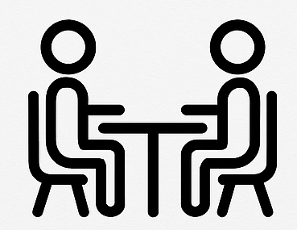

Survey Modes and the Total Survey Error Framework
PUBHBIO 7225 Lecture 2
Outline
Topics
- Designing Survey Questions
- Survey Modes
- Total Survey Error (TSE) framework
Activities
- 2.1 Survey Questions
- 2.2 OPAS Sources of Error
Readings
- Dillman DA and Christian LM (2005). Survey Mode as a Source of Instability in Responses across Surveys. Field Methods, 17(1), 30-52. (PDF on Carmen)
Assignments
- Problem Set 1 due Thursday 9/4/25 11:59pm via Carmen
- Peer Evaluation of Problem Set 1 due Tuesday 9/9/25 11:59pm via Carmen
Designing Survey Questions
Assuming the observation unit is a person, questions should be …
Simple and clear
- Beware words that might be interpreted differently by different people, or might not be understood by some people
Specific, not general
(not good) “Have you ever been attacked?”
(better) “Has anyone ever attacked you in any of these ways: (a) With any weapon, for example, a gun or knife, (b) With anything like a baseball bat, frying pan, scissors…”
Related to the concept of interest
- Reusing questions from previous surveys allows for historical comparison – if appropriate for the audience/topic
Carefully ordered
Responses to a question may be unduly influenced by question(s) that preceded it
Usually best to ask more general question first, followed by specific question(s)
Designing Survey Questions
Questions should be (cont.)…
Not leading or “loaded” questions
- Questions can be written to lead the respondent to the answer you want to hear — don’t do this!
Not written as double-negatives
(not good) “Do you favor or oppose not allowing drivers to use cell phones while driving?”
(better) “Do you agree with laws banning cell phone use while driving?”
Not double-barreled
- Be sure to ask only one concept per question
If closed-ended, all response options are available
- Make sure all respondents would be able to endorse at least one answer
If multiple-choice/forced-choice, response options are mutually exclusive and exhaustive
- Make sure all respondents would be able to select just one answer
Activity 2.1: (Part 1)
Survey Questions (Part 1)
Survey Modes
Four ways we could get information from a sampled person, called the survey mode:

High-level differences include:
Cost
Use or non-use of an interviewer
Availability of visual aids
Enforcement of “skip patterns”
Issues with the frame
Types of biases likely to be present
Availability of (and types of) paradata
- Paradata = data collected about the survey process (e.g., how long the interview took)
Mode: Face-to-Face
Survey completed in-person via an interviewer, traditionally via door-to-door canvassing (considered “gold standard”)
Pros:
Cons:
Frame Considerations:
Mode: Mail/Written
Survey completed by respondent with paper and pencil (“PAPI”), usually sent via mail
Pros:
Cons:
Frame Considerations:
Mode: Phone
Survey completed over the phone – in practice, usually “CATI” (Computer Aided Telephone Interview) where computer is used by interviewer (not by respondent)
Pros:
Cons:
Frame Considerations:
Mode: Internet
Survey completed online, often called “CAWI” (Computer Aided Web Interview)
Pros:
Cons:
Frame Considerations:
Activity 2.1 (Part 2)
Survey Questions (Part 2)
Survey Errors
Historically, survey methodologists described errors as “Sampling Errors” and “Non-Sampling Errors”
More modern approach is the Total Survey Error approach
Total Survey Error = difference between population parameter (the truth) and the estimate of that parameter based on a sample survey
Two types of survey error:
- Random error – random fluctuation from sample to sample
- Should “cancel out” in terms of bias of the sample estimate but will increase variance (reduce precision)
- Systematic error – e.g., underreporting of sensitive behaviors
- Biases the sample estimate systematically away from the true value
Sources of Errors: Two Categories
- Measurement Errors – how well the (edited) survey responses obtained from a respondent reflect the underlying construct being measured
- Errors that could occur even with a census
- Representation Errors – how well the (weighted) sample represents the target population
- Errors that would not occur if we had a census (measured entire population)
![A flowchart diagram of the Total Survey Error (TSE) framework. The diagram is split into two main vertical columns, "Measurement" on the left and "Representation" on the right. In the Measurement column, the flow goes from "Construct" to "Measurement" to "Response" to "Edited Data." Red arrows pointing to the right of each step label the sources of error: "Specification Error (Validity)" for the first step, "Measurement Error" for the second, and "Processing Error" for the third. The Representation column flows from "Target Population" to "Sampling Frame" to "Sample" to "Respondents" to "Postsurvey Adjustments." Similarly, red arrows label the errors at each step: "Coverage Error," "Sampling Error," "Nonresponse Error," and "Adjustment Error." Both columns converge at the bottom, with arrows from "Edited Data" and "Postsurvey Adjustments" pointing to a final box labeled "Survey Statistic."](figures/TSEdiagram.png)
Adapted from Groves et al. (2009), Survey Methodology, 2nd Edition
TSE Components Affecting Measurement
- Specification Error (Validity) – error arising when the construct being measured is operationalized (turned into survey questions) in an invalid way, i.e., the questions do not properly measure the underlying construct
- Measurement Error – the measured response differs from the true value (many possible reasons), which is especially problematic when asking people questions
Some sources of measurement error:
lying
not understanding or misinterpreting the question
forgetting/recall bias
different responses in different survey modes
interviewer effects
different responses to different interviewers
social desirability
satisficing (choosing “easy” answers to reduce response burden)
question order
question wording
- Processing Error – data entry errors and coding errors, for example, from coding open-ended responses or classifying occupations
TSE Components Affecting Representation
- Coverage Error – mismatch between target population and sampling frame
- Undercoverage – some members of the target population are not in sampled population
- Overcoverage – sampling frame contains units that are not in the target population
- Sampling Error – error that results from taking a sample rather than evaluating the whole population (variability inherent in using a random subset of the population for estimation)
- Nonresponse Error – not all sampled units respond/provide complete data, and responses from the units who do participate may be different from the responses from units who do not participate (if they had been observed)
- Unit nonresponse – a sampled unit provides no data at all
- Item nonresponse – a sampled unit provides some data, but some items have missing values
- Adjustment Error – error arising when the sample is adjusted for design effects (i.e., the “complex design”) via weighting or other techniques (poststratification, calibration), possibly including adjustments for nonresponse
Selection Bias
All these representation-related errors can lead to Selection Bias
Arises when some part of the target population is not in the sampled population
Occurs when the actual probabilities with which units are sampled differ from the specified selection probabilities
Is most obviously a problem for non-probability samples, but can also arise with probability samples
Activity 2.2
OPAS Sources of Error
PUBHBIO 7225